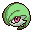
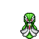
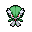

Pokédex / #282

Gardevoir #282
PsychicFairy
To protect its Trainer, it will expend all its psychic power to create a small black hole.
Generation 3 · Hoenn

Stats
| Attack | 65 | |
|---|---|---|
| Defense | 65 | |
| Sp. Atk | 125 | |
| Sp. Def | 115 |
In the wild
| Wild level | 85–95 |
|---|---|
| HP | 68 |
| Experience | 15 |
| Egg groups | Amorphous |
Evolution
- Evolves from Kirlia at level 50.
Moves
| Level | Move | Type | Category | Power | Energy | Cooldown | Effect | |
|---|---|---|---|---|---|---|---|---|
| 1 | Tackle | Normal | Physical | 15 | 15 | 1s | Tackle is one of the most common and basic moves a Pokemon learns. It deals damage with no additional effects. | |
| 5 | Confusion | Psychic | Special | 50 | 60 | 12s | Confusion deals damage and has a 10% chance of confusing the target. | |
| 10 | Magical Leaf | Grass | Special | 60 | 60 | 9s | Magical Leaf deals damage and ignores changes to the Accuracy and Evasion stats. | |
| 15 | Draining Kiss | Fairy | Special | 50 | 60 | 12s | The user steals the target's HP with a kiss. The user's HP is restored by over half of the damage taken by the target. | |
| 20 | Disarming Voice | Fairy | Special | 40 | 50 | 12s | Letting out a charming cry, the user does emotional damage to opposing Pokemon. This attack never misses. | |
| 25 | Hypnosis | Psychic | Status | – | 80 | 60s | Hypnosis puts the target to sleep. | |
| 35 | Psychic | Psychic | Special | 90 | 100 | 21s | Psychic deals damage and has a 10% chance of lowering the target's Special Defense by one stage. | |
| 40 | Heal Pulse | Normal | Special | 120 | 150 | 90s | Heal Pulse recover party members HP. | |
| 45 | Stored Power | Psychic | Special | 20 | 80 | 18s | Stored Power deals variable damage depending on the stat modifications of the user. When the user has no stat modifications, Stored Power's base power is 20. Its power increases by 20 for each stat boost the user has. | |
| 55 | Future Sight | Psychic | Special | 120 | 120 | 15s | Future Sight deals damage, but does not hit until two turns after the move is selected. | |
| 60 | Moonblast | Fairy | Special | 95 | 95 | 17s | Borrowing the power of the moon, the user attacks the target. This may also lower the target's Sp. Atk stat. | |
| 65 | Calm Mind | Psychic | Status | – | 70 | 60s | Calm Mind raises the user's Special Attack and Special Defense by one stage each. | |
| 70 | Dream Eater | Psychic | Special | 100 | 120 | 15s | Dream Eater deals damage only on sleeping foes and the user will recover 50% of the HP drained. | |
| 75 | Double Team | Normal | Status | – | 150 | 90s | Double Team increases the user's speed into maximum, creating illusions. |
Field abilities
BlinkTeleportFind
Special abilities
SynchronizeTrace
Egg moves
Confuse RayDisableEncoreGrudgeMementoMisty TerrainShadow SneakSynchronoise
Technical machines
Calm MindDouble TeamDream EaterEnergy BallHyper BeamLight ScreenProtectPsychicRain DanceReflectRestSafeguardShadow BallShock WaveSubstituteTauntThunder WaveThunderboltToxic
Drops
| Item | Amount | Chance | |
|---|---|---|---|
| twisted spoon | 1 | 33.3% | |
| linearly guided hypnose pendant | 1 | 16.7% | |
| shadow orb | 1 | 13.3% | |
| cutting fang | 1 | 13.3% | |
| black diamond | 1 | 11.1% | |
| grey-blue powder | 1 | 8.33% | |
| luminous orb | 1 | 6.67% | |
| astral glyph | 1 | 6.67% | |
| plasmatic lightning | 1 | 6.67% | |
| onigiri | 1–5 | 5% | |
 | gardevoir doll | 1 | 0.1% |
| Mind Plate | 1 | 0.05% | |
| Pixie Plate | 1 | 0.05% | |
| TM 36 | 1 | 0.01% | |
| TM 27 | 1 | 0.01% | |
| TM 39 | 1 | 0.01% | |
| held twisted spoon | 1 | 0.01% | |
| held pink bow | 1 | 0.01% |